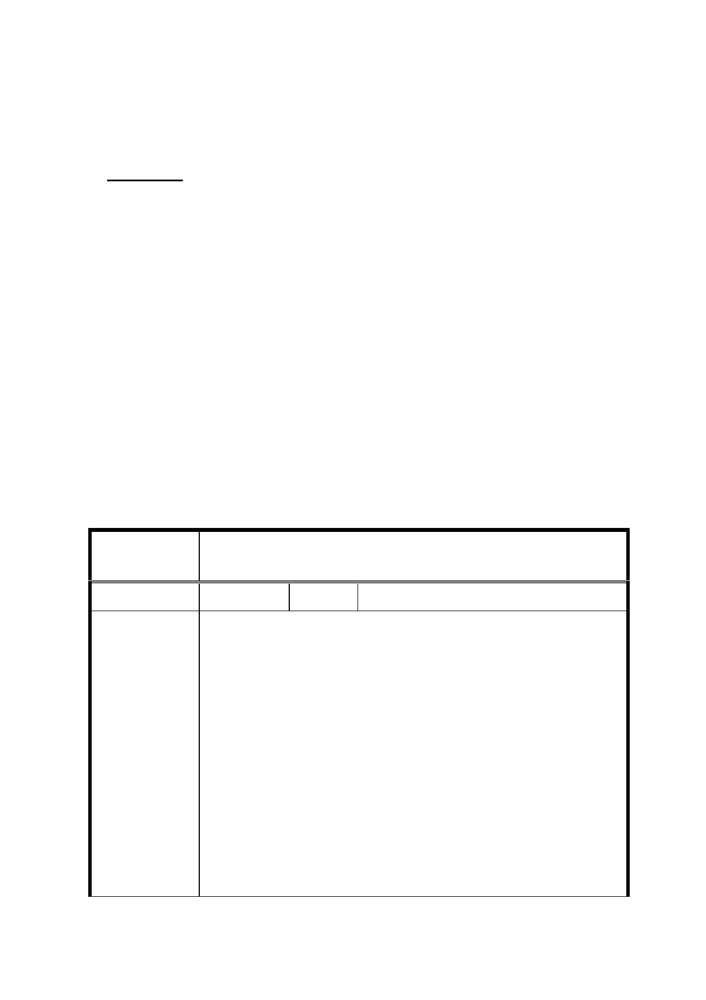

延續以及都市防救災功能，…。」，以茲完備。
三、公民或團體所提陳情意見審決同市府回應說明。
附帶決議：
一、請市府就全市 TOD 規劃設計準則委託進行研究，以作為
相關都市計畫及都市設計準則訂定之參考。另請市府就
西區門戶台北車站周邊地區、東區門戶南港車站周邊地
區以及信義計畫地區，著手進行相關人行立體連通系統
之規劃，並納入各該地區後續整體發展計畫內。
二、有關中國信託公司對 A7 街廓新舞台重建之相關事項，
請中國信託公司正式行文予市府，雙方另以公開形式對
外說明，後續則由市府列入行政交代事項，以作為 A7
街廓後續都市設計審議及建造執照申請之依循。
臺北市都市計畫委員會公民或團體所提意見綜理表
案 名 修訂臺北市信義計畫特定專用區細部計畫(第三次
通盤檢討)案（第二次公告公開展覽）
編 號 1 陳情人 中國信託商業銀行股份有限公司
主旨：謹就臺北市政府於 104 年 5 月 11 日公告「修訂臺北
市信義計畫特定專用區細部計畫（第三次通盤檢討）
案」之第二次公開展覽內容提出意見，詳如說明，
請 查照。
說明：
陳 情 理 由 一、 按公民或團體得於細部計畫變更之公開展覽期間
內，以書面提出意見，都市計畫法第 28 條及第 19
條第 1 項定有明文。查臺北市政府於 104 年 5 月 11
日以府都規字第 10400530500 號公告辦理「修訂臺
北市信義計畫特定專用區細部計畫（第三次通盤檢
討）案」之第二次公告公開展覽，其中第 29 頁至
30 頁增訂 A7 街廓內建築物附設新舞臺藝文展演空
21